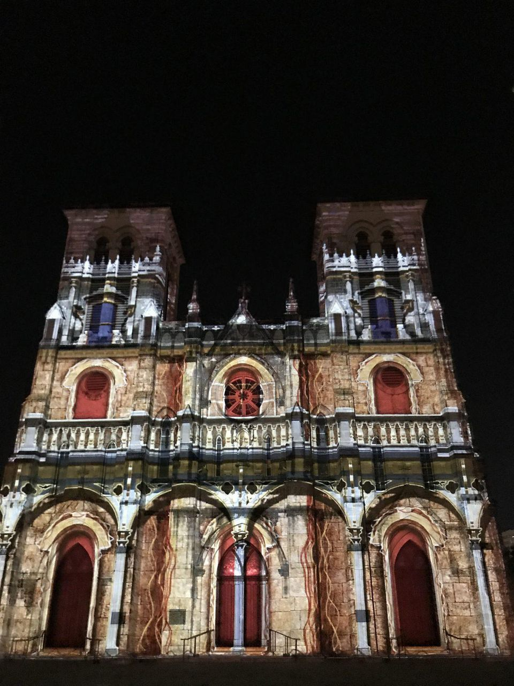
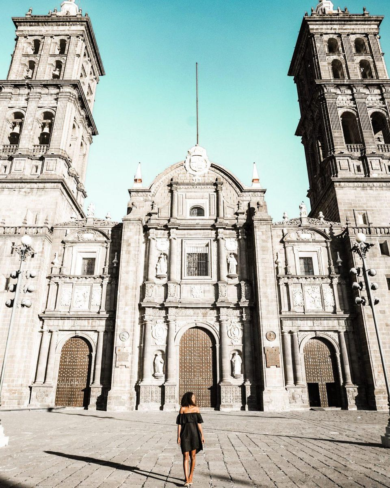
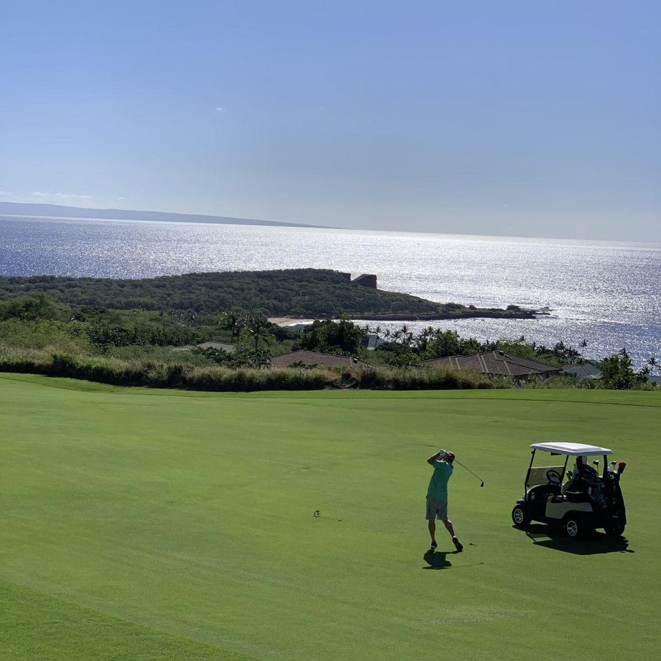
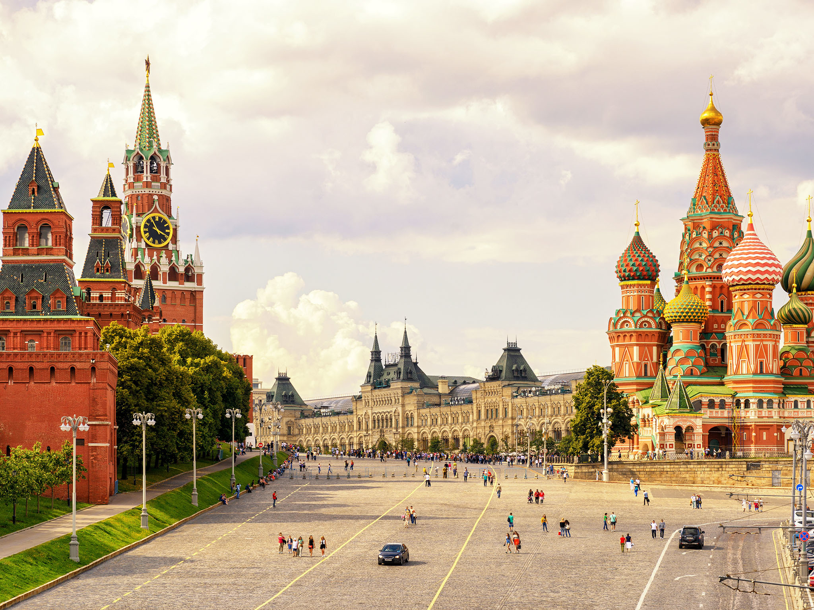
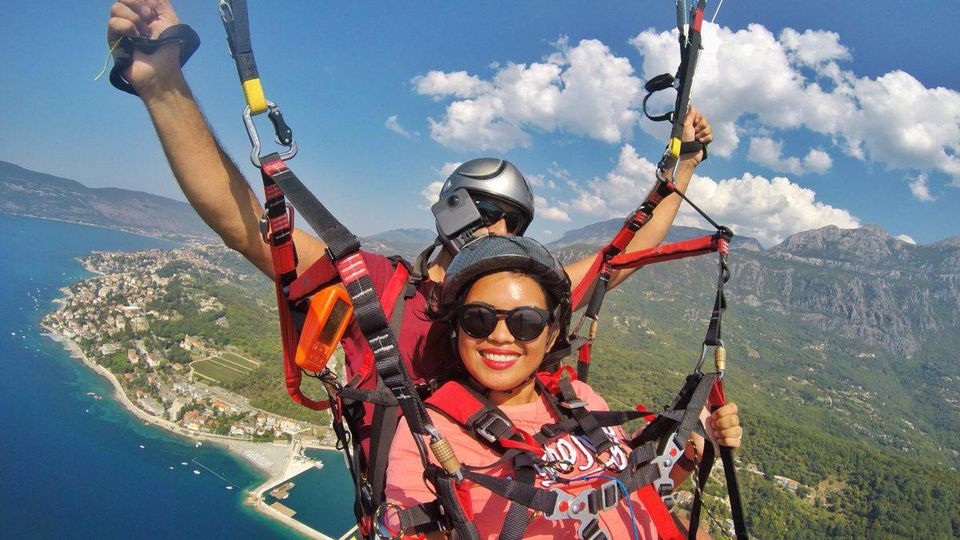
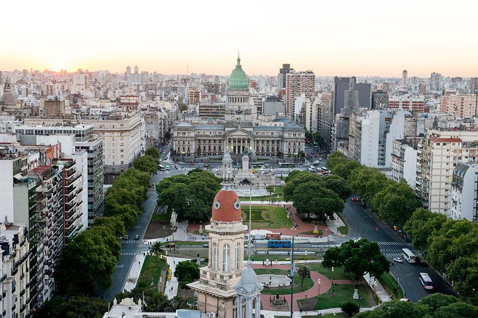
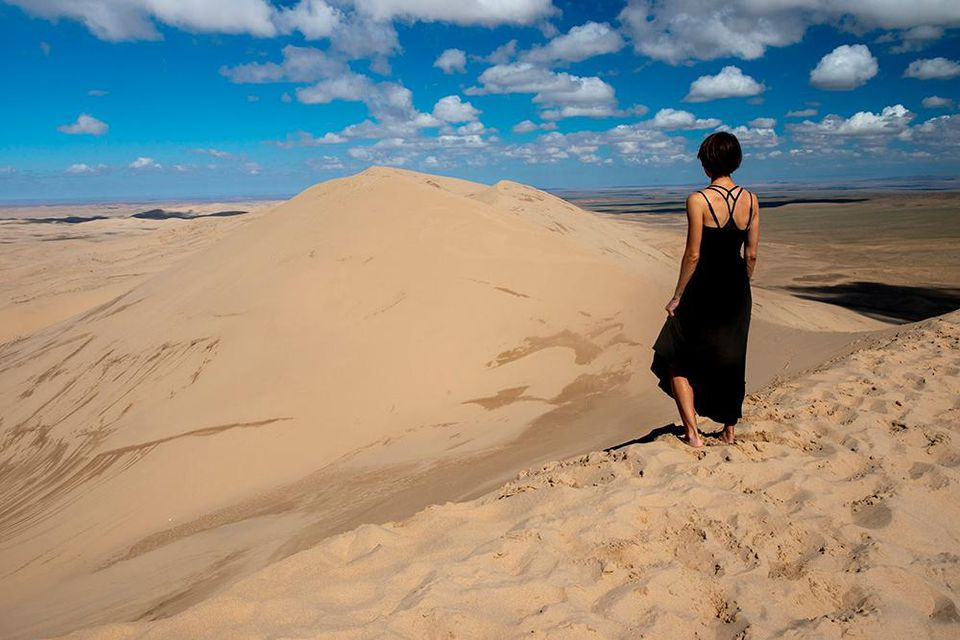
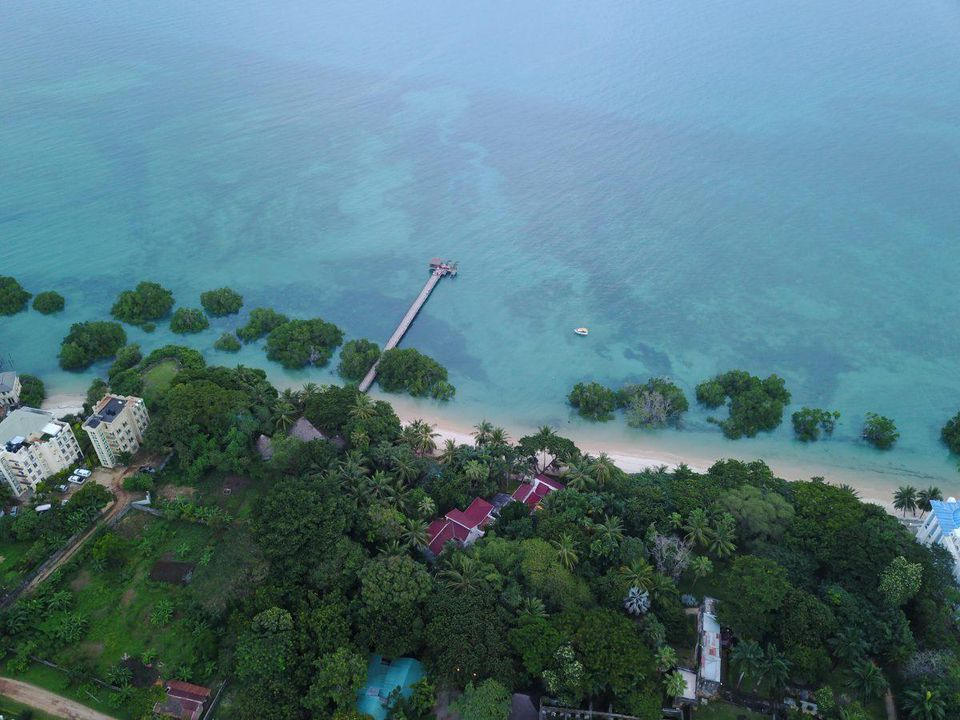
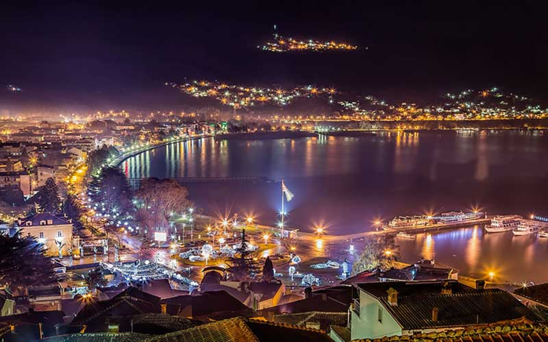
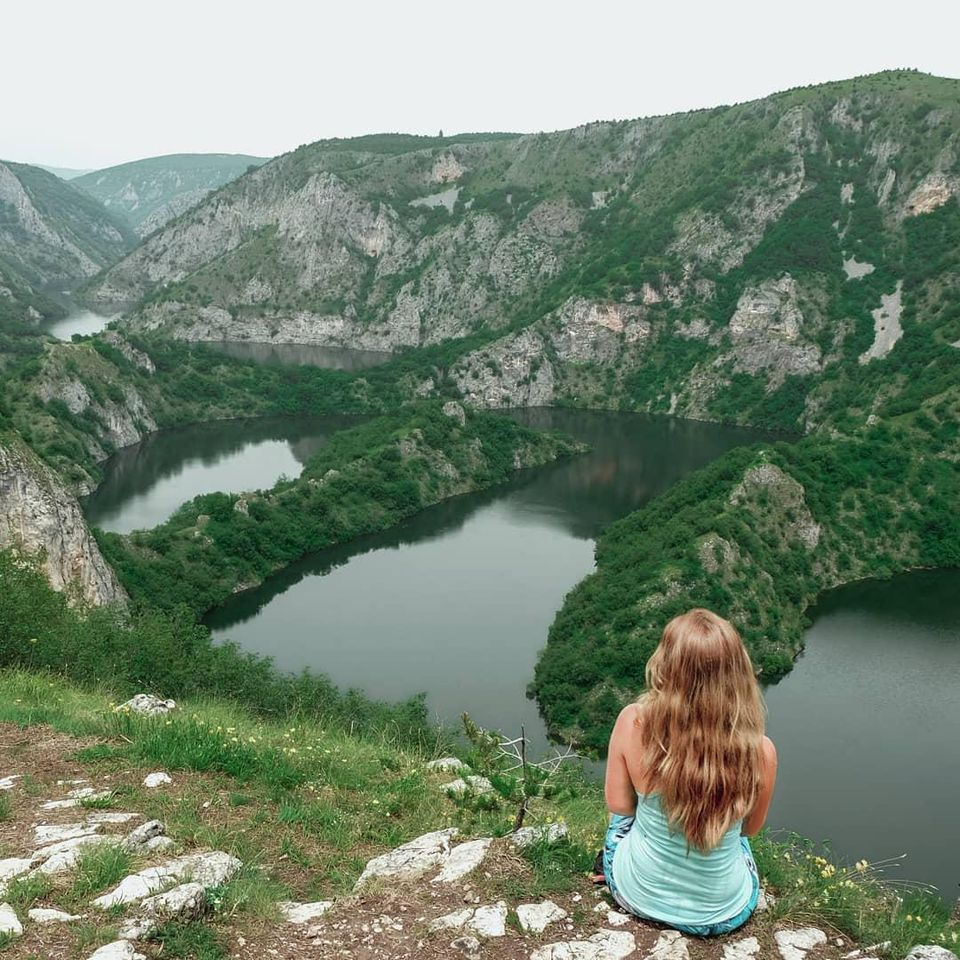

Highlight for Top Destinations of 2019
The goal is to highlight budget travel destinations that are a bit off-the-beaten path. They don’t necessarily have to be cheap destinations but they should be places where you can vacation without breaking the bank. That could be a country where Americans have strong purchasing power or a place that is far away but offers a good value in terms of experience. So, without further ado, here is the official list of best budget travel destinations for 2019 from some of my favorite travel experts. All responses are in their own words.
1. San Antonio, Texas, the United States of America
Head to San Antonio, Texas for a domestic budget travel gem in 2019
Whether you're craving Tex-Mex or authentic Mexican food, San Antonio has it. Before my family could afford international destinations, we'd road trip from Houston to San Antonio for the weekend. From strolling along the San Antonio River Walk to chasing thrills at Six Flags Fiesta Texas, we always had a blast. There are also plenty of historic sites that you can visit like the San Fernando Cathedral, which hosts nightly light shows at no cost. If you find yourself visiting San Antonio during the weekend, be sure to wander through the farmer's market at the Pearl Brewery. After graduating from college, I spent two years living in San Antonio and the Pearl Brewery was the first stop for my out-of-town visitors.
2. Puebla, Mexico
With great eats and fabulous architecture, Puebla, Mexico should be at the top of your cheap destinations for 2019.
I spent a month traveling throughout Mexico last January and I found Puebla to be a pleasant surprise. The city is a UNESCO heritage site and it's easy to see why. Architecture lovers could spend days exploring the historical center and marveling at what seems like an endless amount of churches. Despite this being Mexico's fourth largest city, you'll hardly see any other tourists. It felt like I had the place all to myself. It's one of those cities where you can just soak in the tranquil atmosphere. The region is known for its Mole sauce, which you can't miss while visiting. Ciara Johnson is a blogger, writer, and full-time traveler from Houston, TX. When she's not on the road, she's laughing with friends, watching documentaries and eating Chipotle. You can follow her travels on Instagram or at www.heyciara.com.
3. Hawaii, the USA
Thanks to low-cost carriers, getting to Hawaii is cheaper than ever before making it a budget traveler's dream.
I go to Hawaii every year. I’ve been going for years and love all of the islands. Flights to Hawaii from the mainland are generally pretty cheap, especially in the past few years. Although it isn’t the most inexpensive when you arrive, it is well worth it because you get the South Pacific feel with the comforts of America… and a shorter plane flight. I particularly recommend Maui, perhaps my favorite places in the world, and the little visited island of Lanai. For golf lovers I’d recommend the Four Seasons at Lanai.
4. Moscow, Russia
Even during the World Cup, Moscow, Russia boasts cheap prices. With views like this, as well as a great heritage, it should be on every budget traveler's list for 2019.
I visited Moscow twice for the World Cup and their supposedly inflated prices for the competition still didn't warrant it being expensive. The city offers plenty to see. A must-visit is Lenin's Mausoleum, the former Soviet Leaders resting place. Throw in the city's cover photo (Saint Basil's Cathedral), and the famous Kremlin and you've already got a full day covered. Moscow, like the rest of Russia, has a stereotype of being a bitterly cold destination. That is true during the winter months, with temperatures reaching well below zero degrees Celsius. Yet, a winter break is one of the best times to visit, thanks to the fairytale setting that the laying snow creates. During the summer, you can expect steady sunshine and clear skies so put on your shades, grab a bliny and wander around the Red Square with ease.
5. The Balkan Peninsula
Activities like paragliding are much cheaper in the Balkan Peninsula than they would be in other parts of Europe.
We all think Europe is expensive but I beg to disagree. Traveling around Europe doesn’t need to cost you an arm, a leg and perhaps a kidney. If you want to experience Europe on a budget, I’d recommend exploring the Balkan Peninsula. Croatia is the most popular Balkan country and can be expensive so I’d recommend starting a trip around the Balkan Peninsula in Herceg Novi, Montenegro. From there you can cross the border and travel by bus to Bosnia and Herzegovina. I spent five days in Montenegro last year and I felt like it was never enough. We went on a boat tour to Perast, Porto Montenegro, Our Lady of the Rocks and wrapped up the trip by kayaking and paddle boarding on the beach nearby. Other fun activities include paragliding and diving. The best part is that all of these activities are way cheaper compared to other European cities.
6. Buenos Aires, Argentina
With gorgeous architecture and a great food culture, Buenos Aires is at the top of every cheap travel list.
There is no city in the world as intoxicating as Buenos Aires. The streets are lined with grand European-style architecture, cozy cafes and endless parks. The staples of life in this budget friendly city are steak, wine, empanadas and ice cream. I fell so in love with Buenos Aires on my first visit in 2015 that I came back two months later. In January 2018, I returned to my favorite city for a month to work on my first book project and escape the American winter. Three cheers for the Southern Hemisphere.
7. Gobi Desert, Mongolia
The Gobi Desert is hard to get to, but the views and nature are worth the trek for a budget traveler.
My obsession with the remote corners of the globe led me to Mongolia this year. I spent two glorious weeks bumping around in the back of a blue Russian van named Boris. To cut down the cost of our tour to $50 a day, I asked my guide to find other travelers to join us and made a great group of new friends! Through the windshield, we watched as paved roads faded into dirt tracks and the scenery transformed from the barren Gobi Desert to lush green forests. We had the place to ourselves a majority of the time even though it was peak tourist season. Mongolia is one of my top five trips of all time and despite the distance, cheaper than a summer trip to Europe.
8. Zanzibar
Although Zanzibar has high-end luxury resorts, you can still find a deal in this gorgeous African country.
Zanzibar is one of my favorite destinations! I am so in love with the ocean there and the people. Zanzibaris are so much fun and friendly. While there are expensive resorts there, you can still find some inexpensive bed & breakfasts and hostels in Stone Town that allow you to be right next to the Indian Ocean, where all the restaurants and fun is.
9. Macedonia
Ohrid is Macedonia's most seductive destination. It sits on the edge of serene Lake Ohrid, with an atmospheric old quarter dotted with beautiful churches and topped by the bones of a medieval castle.
Part Balkan, part Mediterranean and rich in Greek, Roman and Ottoman heritage, Macedonia has a fascinating past and a complex national identity. Glittering Lake Ohrid and its historic town have etched out a place for Macedonia on the tourist map, but there is a wealth of natural beauty in this small country. Dramatic mountains have blissfully quiet walking trails, lakes and riding opportunities. The national parks of Mavrovo, Galičica and Pelister are cultivating some excellent cultural and culinary tourism initiatives; these gorgeous regions are as yet little explored, so if you want to get off the beaten track in Europe – this is the place. Tourist infrastructure is scant, but locals are unfailingly helpful. Skopje's centre has suffered from a building spree of grotesque faux-neoclassical monuments, buildings and fountains, funded by the previous government. Luckily, its Ottoman old town and buzzing modern areas are untouched and remain charming and authentic.
10. Serbia
If you want more than the bustle of Belgrade, head outside to the city to Uzice for some beautiful nature.
In the bustling city of Belgrade, there is something happening every hour of every day. The streets are filled with amazing restaurants, cute cafes, bars and clubs. The friendly locals are always out and about. You will find people of all ages enjoying the outdoor cafes and drinking rakija (the national drink of Serbia). The restaurants have a great mix of both local and international dishes, and are great for trying new dishes. I’d recommend komplet lepinja, cevapi and karađorđeva šnicla. The nightlife in Serbia is one of a kind. There are floating bars and clubs along the Danube riverbank. Parties go on till the early morning hours.